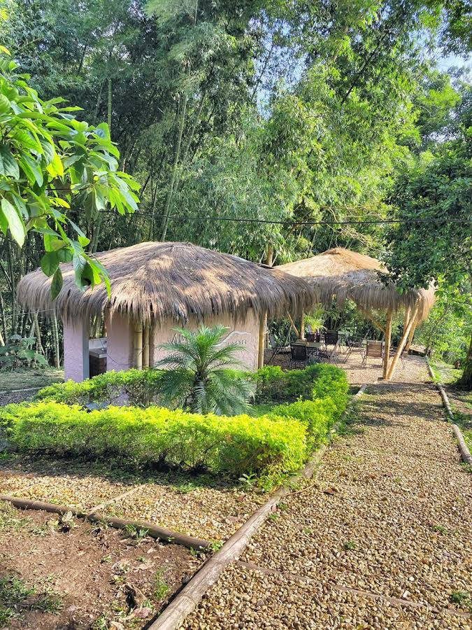
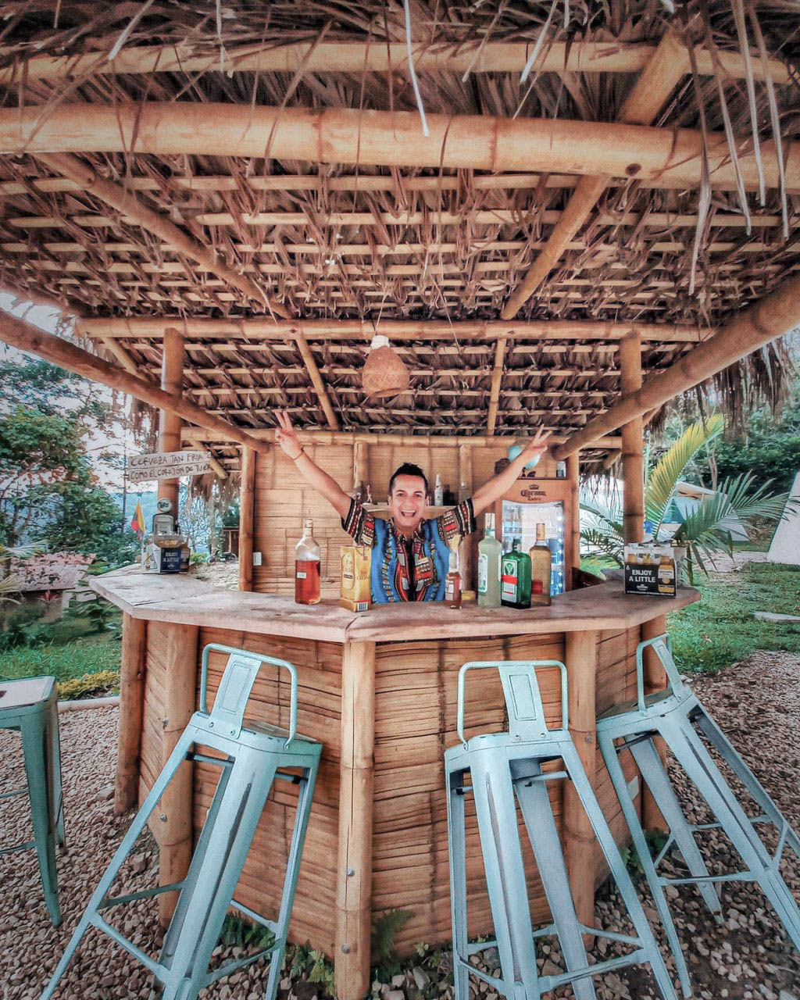
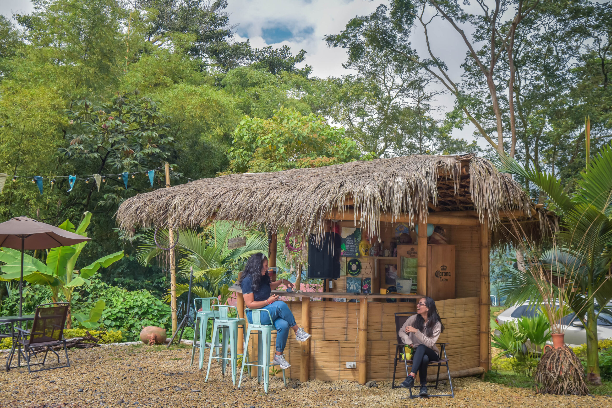
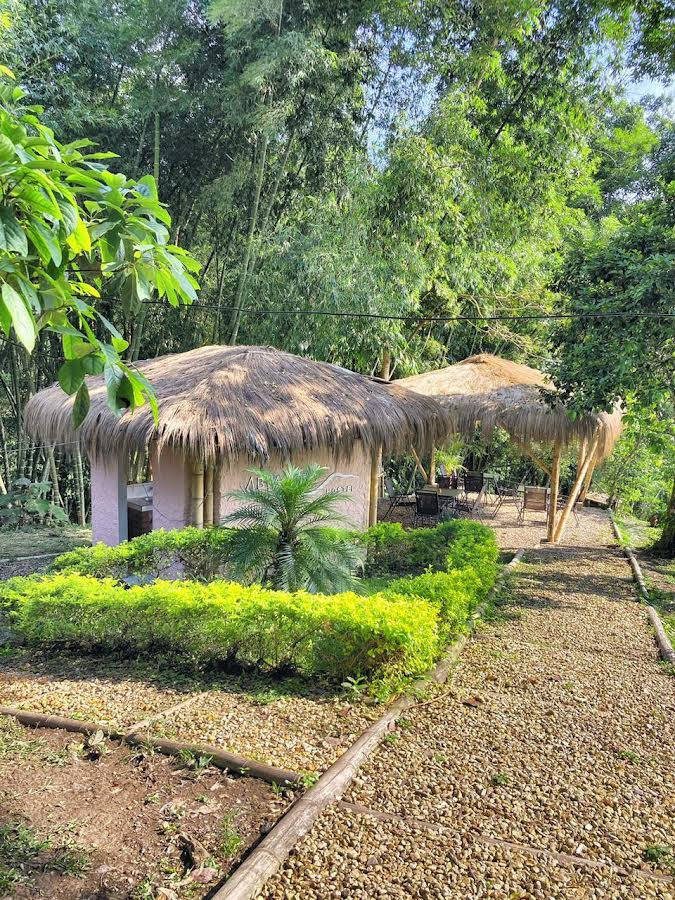
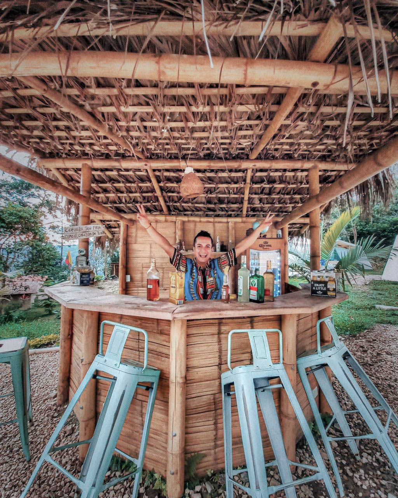
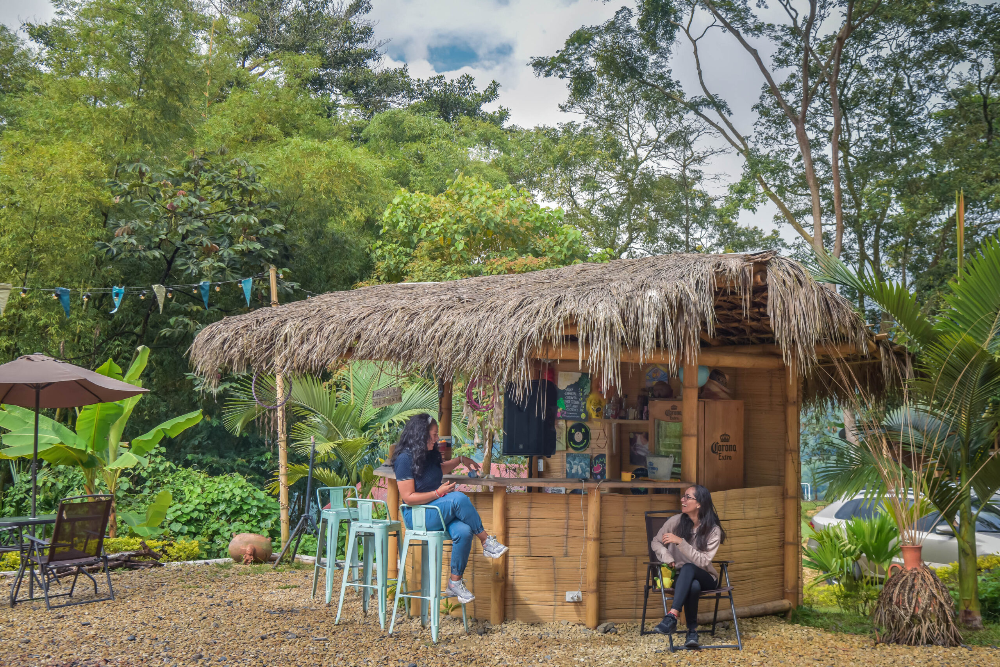

CABAÑA SAFARI

Abya Yala hostel cuenta con 8 Cabañas Safaris. Cada una de ellas con un nombre particular inspirado en la cultura y en los lenguajes de nuestros ancestros culturales a lo largo del territorio Colombiano. Está ubicadas en grupos de 4 y comparten 4 baños conjuntos al lado de la piscina. La primera de ellas es Poleka Kasue, nombre originario de lo que conocemos como el nevado del Tolima. La segunda es
 




